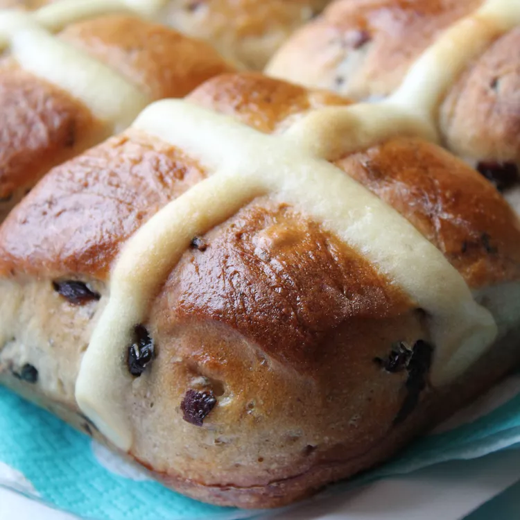

Hot Cross Buns

Descriptions
I love hot cross buns and look forward to making them every Easter! I like to make the dough in a bread machine, but you can use a stand mixer if you prefer.
Steps
- 3 cups all-purpose flour
- 3/4 cup warm water (110 degrees F/45 degrees C)
- 1/4 cup white sugar
- 1 larges egg
- 1 large eggs,seperated,divided
- 3 tablespoons butter,softened
- 1 tablespoon active dry yeast
- 1 tablespoon instant powdered milk
- 3/8 teaspoon salt
- 3/4 cup dried currants
- 1 teaspoon ground cinnamon
- 2 tablespoons water
- 1/2 cup confectioners' sugar
- 2 teaspoons milk
- 1/4 teaspoon vanilla extract
Steps
- Put flour, warm water, 1/4 cup white sugar, egg, egg white, butter, yeast, milk powder, and salt in a bread maker and start on dough program.
- When 5 minutes of kneading are left, add currants and cinnamon. Leave in the machine until doubled in size, about 1 hour.
- Punch down dough on a floured surface, cover, and let rest for 10 minutes.
- Shape into 12 balls and place in a greased 9x12-inch pan. Cover and let rise in a warm place until doubled, 35 to 40 minutes.
- Preheat the oven to 375 degrees F (190 degrees C).
- Mix egg yolk with 2 tablespoons water in a small bowl; brush on dough.
- Bake in the preheated oven until golden brown, about 20 minutes. Remove from pan immediately and cool on wire rack.
- Mix together confectioners' sugar, milk, and vanilla until smooth. Place glaze in a piping bag or a sandwich bag with the corner snipped off; pipe a cross onto each roll.
To Make Dough in a Stand Mixer
Combine warm water and yeast in the bowl of the mixer and let soften for about 5 minutes. Add flour, milk powder, 1/4 cup white sugar, egg, egg white, and salt. Mix, scraping the dough down occasionally, on low speed using the dough hook for 10 minutes. Add butter, currants, and cinnamon and mix for an additional 5 minutes. Transfer dough to a greased bowl, cover with plastic wrap and a kitchen towel, and allow it to rise until doubled, about 1 hour. Proceed with the recipe instructions.